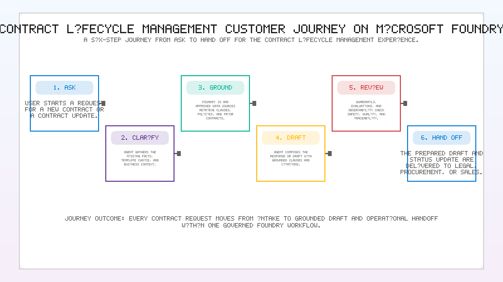
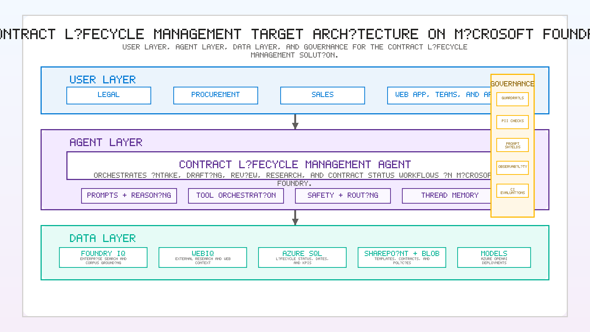

Create
Draft NDAs, MSAs, and SOWs from approved templates and clauses — with citations.
A production-style, 9-challenge MicroHack that walks you from an empty Foundry project to a shipped, evaluated, observable Contract Lifecycle Management assistant — on both the low-code portal and the pro-code SDK.
Legal and Procurement burn 35% of their week on "what does clause X say?" and lose millions per year on missed auto-renewals. This MicroHack builds the assistant that ends that.
Draft NDAs, MSAs, and SOWs from approved templates and clauses — with citations.
Retrieval over the enterprise corpus, side-by-side clause comparisons, and File Search on uploaded PDFs.
Look up contract status in Azure SQL, enrich answers with web research via WebIQ, and track every lifecycle stage through renewal.
Prompt Shields + Content Safety + a Foundry-evaluated gate before any deploy.
A multinational with 40,000 employees and 400+ new agreements per month. Contracts live across SharePoint, email, and 3 legacy DMS systems. Here is where the money is:
Two views — what the agent does for the business, and which Azure services power it.
Legal, Procurement, and Sales work with one Contract Lifecycle Management Agent that exposes four business capabilities:
The agent never gives legal advice.


Every user request is answered by orchestrating one or more of these. Every call is traced and evaluated.
Azure AI Search + SharePoint — contract search, document grounding, and knowledge retrieval across the corpus, templates, executed contracts, and policies.
Outcome: grounded answers with citations to the exact clause, paragraph, or SharePoint document.
Bing Search — external research and market intelligence: counterparty background, regulatory context, industry benchmarks.
Outcome: fresh, cited web sources augmenting the internal corpus.
Azure SQL — structured contract metadata: status, dates, owners, renewal information, KPIs.
Outcome: deterministic status answers; renewals never missed.
Foundry IQ collapses AI Search + SharePoint into one internal-knowledge tool · WebIQ handles anything not in the corpus · Azure SQL is a direct data connector for structured contract state · safety wraps every tool.
Do them in order — each one wires up the piece the next one needs.
Create the Foundry project, deploy the model, connect Azure AI Search, enable tracing, and upload the corpus.
Write the persona and instructions, prove the first round-trip, and lock in the refusal behavior.
Index NDAs, MSAs, policies, and the clause library into Azure AI Search. Add citations to every answer.
Attach the three agent tools: Foundry IQ (Azure AI Search + SharePoint), WebIQ (Bing Search), and Azure SQL (structured contract data).
Prompt Shields, PII detection, approved-template enforcement, restricted clause modification.
Trace every prompt → LLM → retrieval → tool → response into Application Insights. Write the KQL.
Score groundedness, relevance, task adherence, safety, tool accuracy on a 15-row dataset. Turn the gate green.
Sweep model, prompt, retrieval, and tools. Show the before/after and the cost delta.
Ship as a Web App with Easy Auth, a Teams app, or an authenticated API endpoint.
Agent Service, model deployment, evaluators, tracing.
gpt-4o and gpt-4o-mini for reasoning, drafting, and language tasks.
One knowledge tool wrapping Azure AI Search (corpus, hybrid vector + semantic) and SharePoint (templates, executed contracts, policies).
Vector + semantic hybrid retrieval over the contract corpus with citations.
Source-of-truth corpus feeding the Search index.
Enterprise contract repository: approved templates, executed contracts, and policies.
External research and market intelligence: counterparty, regulatory, benchmarks — cited to source URLs.
System of record for contract lifecycle state: status, owner, renewal date, expiry, KPIs.
Guardrails on inputs and outputs at the project level.
Cost, latency, and grounding telemetry with reusable KQL.
azure-ai-projects + azure-ai-agents for programmatic control.azure-search-documents for the index and hybrid search.azure-ai-evaluation for scriptable gates in CI.azure-monitor-opentelemetry + @traced spans.app/; run python -m app.sample_run --smoke.The product surface for building, evaluating, and shipping agents.
Concepts, quickstarts, and REST/SDK references.
Reference for azure-ai-agents and function calling.
Vector + semantic hybrid retrieval used in Challenge 2.
The evaluators used in Challenge 6 for the deployment gate.
Guardrails enabled in Challenge 4.
Scan the QR code to open Challenge 0 in the GitHub repo on your phone, or jump straight into the first challenge on your laptop.